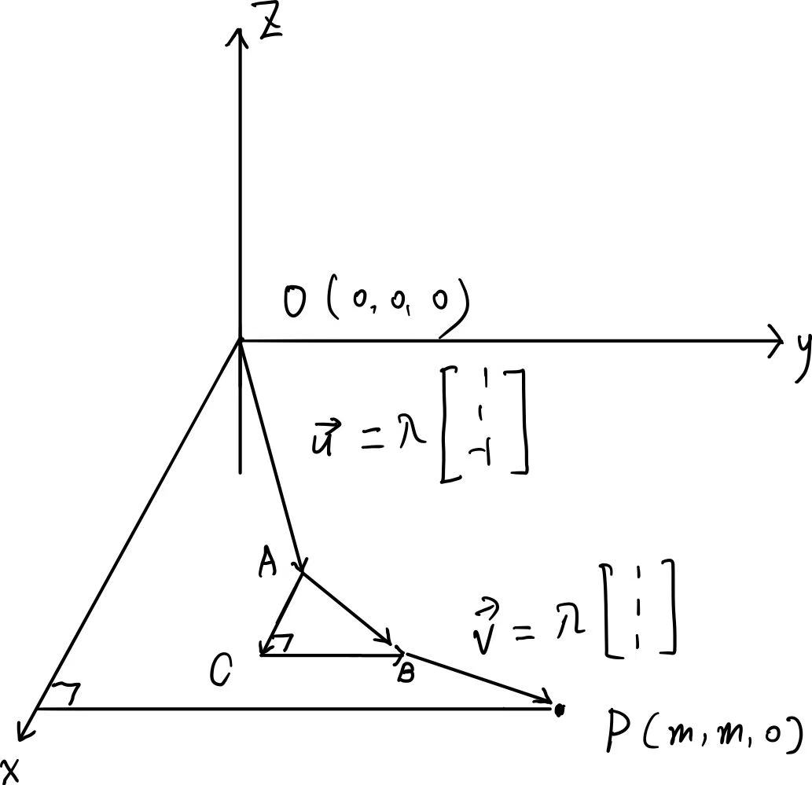

 ## Introduction In our school, we will pass through a hollow square from our classroom to the cafeteria. There are two ways to go through this area: one is directly go down into the square and go up; another is not go down but circumvent on the ground. In fact, there are other similar roads shown in the graph - through \(AO\) and \(OB\) - just like the road in the hollow square but with different heights (I refer to "the road in the hollow square" as the lowest one). I'm interested in which one is the shortest road (referred to as distance) and I'm going to investigate this question using vectors.
Modeling
As shown in the graph, I build a plane coordinate system with the origin point \(O(0, 0, 0)\) at the beginning location. Point \(P(m, m, 0)\) is the endpoint, where \(m\) refers to the side length of the square. Assuming the downwards and upwards road ideally, we have their direction vectors: \[ \left [ \begin{matrix} 1\\ 1\\ -1 \end{matrix} \right ] \space \left [ \begin{matrix} 1\\ 1\\ 1 \end{matrix} \right ] \] and we have their vectors: \[ \begin{aligned} \vec{u} &= \lambda \left [ \begin{matrix} 1\\ 1\\ -1 \end{matrix} \right ] \\ \vec{v} &= \lambda \left [ \begin{matrix} 1\\ 1\\ 1 \end{matrix} \right ] \end{aligned} \] Notice that both vectors have the same coefficient \(\lambda\) because they have the equal length. In addition, the domain of \(\lambda\) should be in \([0, \frac{m}{2}]\) because the length of the downwards (upwards) road must not be more than half of the length of the edge (or diagonal).
Then, we can express point \(A\) and \(B\) using known vectors and points. \[ \begin{aligned} A &= (\lambda, \lambda, - \lambda)\\ B &= P - \vec{v}\\ &= (m - \lambda, m - \lambda, - \lambda)\\ \vec{AB} &= \left [ \begin{matrix} m - 2\lambda\\ m - 2 \lambda\\ 0 \end{matrix} \right ] \end{aligned} \] Notice that \(m - 2 \lambda \in [0, m]\). Further, we can derive vectors \(\vec{AC}\) and \(\vec{CB}\). \[ \begin{aligned} \vec{AC} &= t \left [ \begin{matrix} 1\\ 0\\ 0 \end{matrix} \right ] \\ \vec{CB} &= t \left [ \begin{matrix} 0\\ 1\\ 0 \end{matrix} \right ]\\\\ \vec{AV} + \vec{CB} &= \vec{AB} \\\\ t\left [ \begin{matrix} 1\\ 1\\ 0 \end{matrix} \right ] &= \left [ \begin{matrix} m - 2\lambda\\ m - 2 \lambda\\ 0 \end{matrix} \right ] \\\\ t &= m - 2 \lambda \\ \vec{AC} &= (m - 2 \lambda) \left [ \begin{matrix} 1\\ 0\\ 0 \end{matrix} \right ] \\ \vec{CB} &= (m - 2 \lambda) \left [ \begin{matrix} 0\\ 1\\ 0 \end{matrix} \right ]\\ \end{aligned} \] Now, we obtain all of the vectors and variables we need to deeply investigate the shortest distance. For having an easier look, they are shown collectively here: \[ \begin{aligned} P & \space (m, m, 0)\\ A & \space (\lambda, \lambda, - \lambda)\\ B & \space (m - \lambda, m - \lambda, - \lambda)\\ \\ \vec{u} &= \lambda \left [ \begin{matrix} 1\\ 1\\ -1 \end{matrix} \right ] \\ \vec{v} &= \lambda \left [ \begin{matrix} 1\\ 1\\ 1 \end{matrix} \right ] \\ \vec{AC} &= (m - 2 \lambda) \left [ \begin{matrix} 1\\ 0\\ 0 \end{matrix} \right ] \\ \vec{CB} &= (m - 2 \lambda) \left [ \begin{matrix} 0\\ 1\\ 0 \end{matrix} \right ]\\ \end{aligned} \] ### Functions and equations A pathway to point P is: \[ \begin{aligned} P &= \vec{u} + \vec{AC} + \vec{CB} + \vec{v}\\ &= \lambda \left [ \begin{matrix} 1\\ 1\\ -1 \end{matrix} \right ] + (m - 2 \lambda) \left [ \begin{matrix} 1\\ 0\\ 0 \end{matrix} \right ] + (m - 2 \lambda) \left [ \begin{matrix} 0\\ 1\\ 0 \end{matrix} \right ] + \lambda \left [ \begin{matrix} 1\\ 1\\ 1 \end{matrix} \right ] \end{aligned} \] The distance \(d\) can be expressed as: \[ \begin{aligned} d &= \left | \vec{u} \right | + \left | \vec{AC} \right | + \left | \vec{CB} \right | + \left | \vec{v} \right | \\ &= \lambda \sqrt{3} + \left | m - 2 \lambda \right | + \left | m - 2 \lambda \right | + \lambda \sqrt{3} \\ &= 2 (\lambda \sqrt{3} + \left | m - 2 \lambda \right |)\\ &= 2 (m + (\sqrt{3} - 2) \lambda)\\ \end{aligned} \] Therefore, the function of distance \(d\) is constantly declining as the increase of the coefficient \(\lambda\).
The function will have the minimal value when \(\lambda\) is \(\frac{m}{2}\). That is \(\sqrt{3} m\).
The function will have the maximal value when \(\lambda\) is \(0\). That is \(2 m\). ## Conclusion The question is resolved using mathematical analysis. The more we go down to the hollow square, the less the distance we pass through. The minimal distance is \(\sqrt{3} m\) while the maximal is \(2 m\). In the future, we should walk down into the hollow square when we go to the cafeteria.
Through this investigation, I realized that the design of the hollow square is not only for beauty but also for shorter distances. That is, walks into the beauty, walks into the truth (minimal distance).